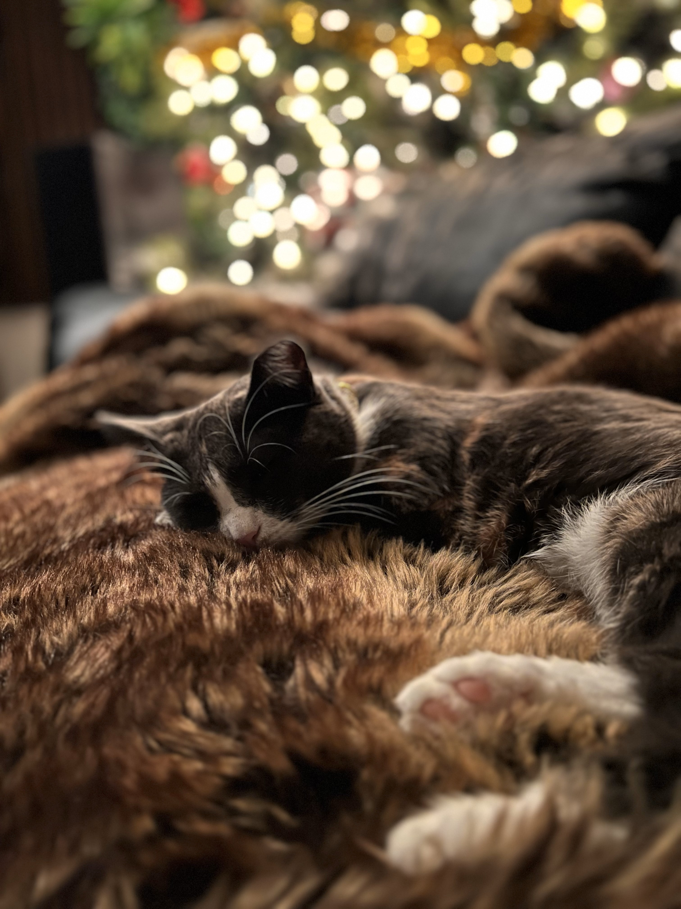

Hello, welcome to my webite that's all about our cats!
Below are some pictures of our cats. Press play on the video for some cozy ambient music while you click through the images.

I wanted to take an aesthetic photo of Chloe as she slept.

A funny picture I took of Krazy's tongue sticking out after she groomed herself.